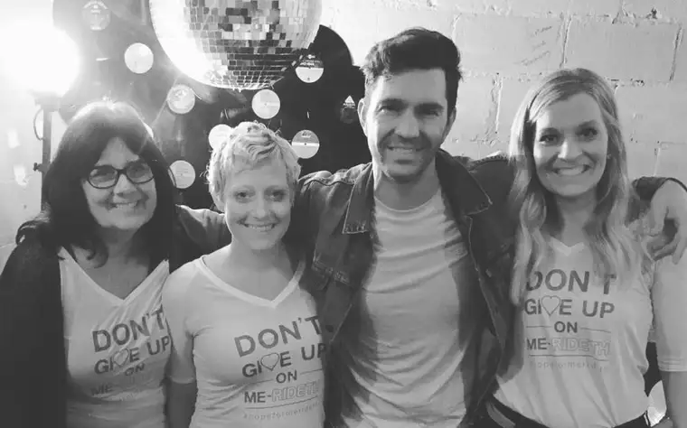

No buildings bear her name; no walks of fame, her footprint; no shelves, the athletic trophies she never received. But to her family and a slew of very blessed friends, Pamela Jo Erickson was one beautiful life force.
Pam, or “Grammy Pammy” as the littles in her life called her, 60, died suddenly Nov. 4 at her Fargo home, and the resonating shock felt by those grateful to know her lingers.
I met Pam at the downtown YMCA, where I worked for several years in temporary child care. As my supervisor, she lovingly welcomed me and all the mothers under her watch, revealing a heart especially tender toward single moms. With bold finesse, she exemplified how practicality, humor and leaning on God could transport us through life’s hardest moments.

Christmas was a favorite season of hers, and she knew how to put on a party, with delicious foods, a sparkling tree, simmering cider, and messy games for the kiddos. A “Pam party” would include a few dogs or cats underfoot – and perhaps a squirrel or other abandoned critter revived from near-death. She’d have stories to spill, including about the antics of our kids, whom she accepted lovingly even when they were being naughty, or the foibles of her own family, her life’s motivating force next to God.
In 2012, I featured her in a Forum article, “Mentoring mothers: Pam Erickson has helped many moms along their paths,” which expands my confines here. In short, Pam was a treasure and I miss her dearly.
At her post-funeral party at The Sanctuary in Fargo, her oldest son, Brady, noted aptly that his mother “multiplied love,” the fruits of which were bestowed, in part, on her four children, 11 grandchildren, 13 foster children, an adopted fifth child, along with the many, diverse souls she encountered at Fargo Housing, where she worked these last years at a job she loved.
When, at that event, I shared my impressions of Pam with her oldest daughter, Sarah, along with my deep sadness, Sarah challenged me: “Carry on her legacy. That’s what she’d have wanted.”
But what was Pam’s legacy? One friend defined it this way: “She had a ministry and didn’t even know it. She was just Pam.”
After praying on how I might help fulfill the “Just Pam” ministry, I realized what she’d want most from me: to highlight Merideth Sorenson, whom I featured in the August 2018 “Faith Conversations” piece, “Mother’s cancer journey brings sweet Hope.” At Pam’s funeral, in lieu of flowers, friends were asked to help this local mother of four battling cancer, through either the “Hope for Merideth Sorenson” fund at Gate City Bank, 3909 13th Ave. S., Fargo, ND 58103, or https://www.gofundme.com/f/hopeformerideth.

Pam felt words weren’t enough, that prayer should always be accompanied with an action so the receiver would feel God’s love tangibly. If you’re looking for an opportunity to lift a life this Christmas and can help, thank you, from here and above.
[For the sake of having a repository for my newspaper columns and articles, I reprint them here, with permission, a week after their run date. The preceding ran in The Forum newspaper on Dec. 2, 2019.]